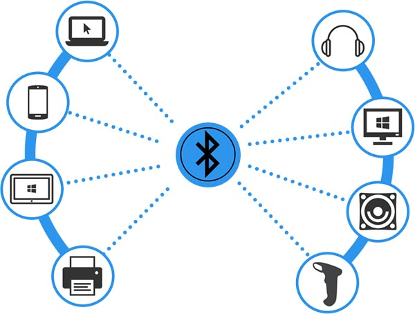

First slide label
Some representative placeholder content for the first slide.

Second slide label
Some representative placeholder content for the second slide.

Third slide label
Some representative placeholder content for the third slide.

Third slide label
Some representative placeholder content for the third slide.

Third slide label
Some representative placeholder content for the third slide.

Third slide label
Some representative placeholder content for the third slide.

Third slide label
Some representative placeholder content for the third slide.

Third slide label
Some representative placeholder content for the third slide.
¿Qué es una red de área personal (PAN)?
02 de Marzo de 2024 por: Anderson Javil Martinez Una red de área personal (PAN) conecta dispositivos electrónicos dentro del área inmediata de un usuario. El tamaño de una PAN oscila entre unos centímetros y unos metros. Uno de los ejemplos más habituales de PAN en el mundo real es la conexión entre un auricular Bluetooth y un teléfono inteligente. Las PAN también pueden conectar ordenadores portátiles, tabletas, impresoras, teclados y otros dispositivos informáticos.
Las conexiones de una red PAN pueden ser por cable o inalámbricas. Los métodos de conexión por cable incluyen USB y FireWire; los métodos de conexión inalámbrica incluyen Bluetooth (el más habitual), WiFi, IrDA y Zigbee.
Aunque los dispositivos en una PAN pueden intercambiar datos entre sí, las PAN no suelen incluir un enrutador y, por tanto, no se conectan a Internet directamente. Sin embargo, un dispositivo dentro de una PAN puede conectarse a una red de área local (LAN) que luego se conecta a Internet. Por ejemplo, un ordenador de escritorio, un ratón inalámbrico y unos auriculares inalámbricos pueden estar conectados entre sí, pero solo el ordenador puede conectarse directamente a Internet.
¿Qué es una red de área personal inalámbrica (WPAN)?
Cuando hablamos del término WPAN nos referimos a una red inalámbrica de área personal. WPAN son sus siglas en inglés. Aquí incluyen redes inalámbricas de corto alcance que no abarcan un área de más de unas decenas de metros. Este tipo de red es utilizada para conectar dispositivos muy variados, como pueden ser impresoras, móviles, ordenadores… Todo ello de manera inalámbrica, sin utilizar ningún tipo de cableado.
Una red de área personal inalámbrica (PAN) es un grupo de dispositivos conectados sin utilizar cables. En la actualidad, la mayoría de las WPAN de uso cotidiano son inalámbricas. Las WPAN utilizan protocolos de conectividad inalámbrica de corto alcance, como Bluetooth.
El alcance de una WPAN suele ser muy pequeño, ya que los protocolos inalámbricos de corto alcance, como Bluetooth, no son eficaces en distancias superiores a 5-10 metros.
¿Cuál es la diferencia entre una red de área corporal (BAN) y una PAN?
Una red de área corporal (BAN) suele hacer referencia a sensores médicos con conectividad inalámbrica colocados sobre el cuerpo humano, incrustados en él o transportados cerca de él. Las BAN se utilizan para realizar seguimiento o apoyar funciones biomédicas (por ejemplo, un marcapasos con capacidades inalámbricas). Una BAN puede conectarse a una PAN o utilizar la tecnología WPAN, pero la mayoría de las PAN no incluyen sensores biomédicos.